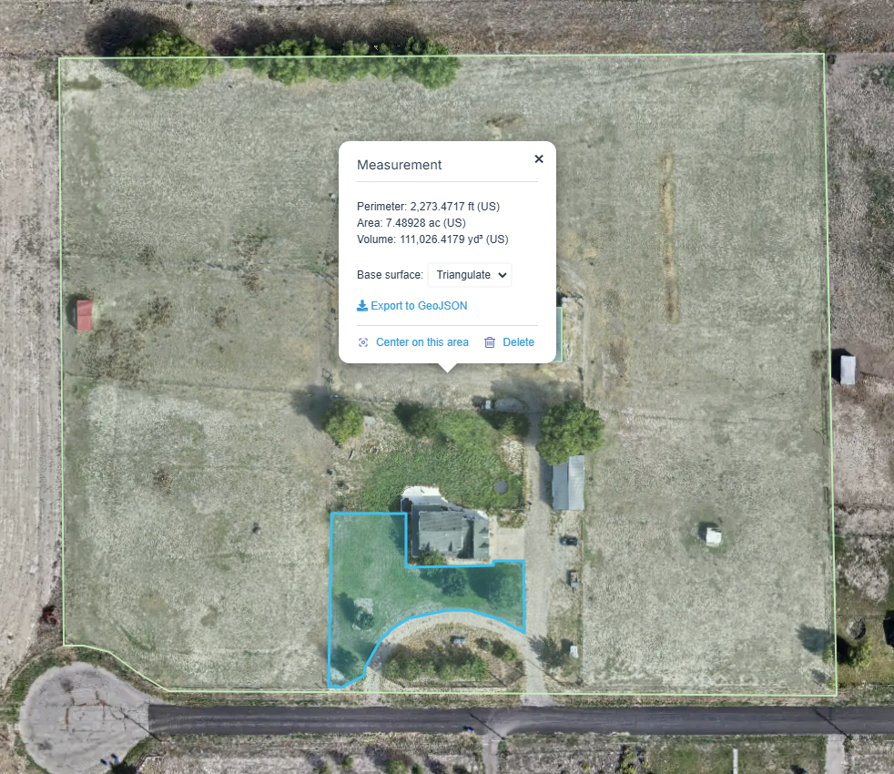
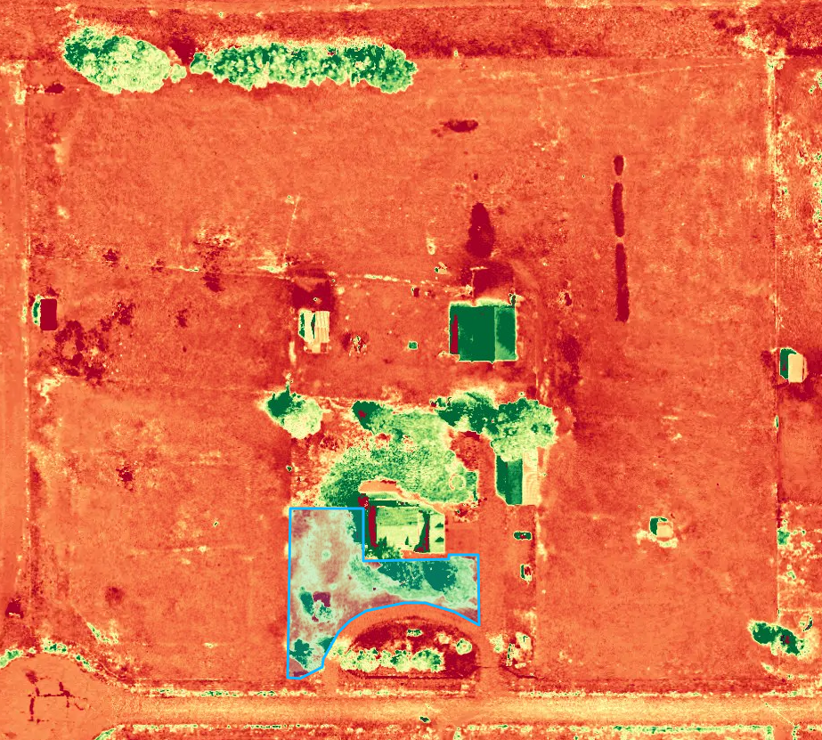

Mapping & 3D Modeling
High-resolution orthomosaics, 3D models, and site visualization.
UAVMetric provides high-resolution aerial data, mapping, and imaging solutions for construction, development, land management, property documentation, and more.
High-resolution orthomosaics, 3D models, and site visualization.
Track progress, preserve conditions, and create a clear project record.
Professional aerial photos and imagery for projects and properties.
Tailored aerial data workflows built around specific project needs.
This UAVMetric deliverable combines a high-resolution orthomosaic with scale, orientation, and an on-map area measurement to turn aerial imagery into a useful site document.

Real UAVMetric deliverables presented the way clients use them: clear, measurable, and easy to communicate.
A high-resolution, top-down site image that brings the entire property into one clear visual reference.

Measure perimeter, area, and volume directly against the mapped site for planning and documentation.

Zoom into individual structures and extract useful measurements while retaining a clear visual record.

Surface and elevation views reveal terrain, structures, vegetation, and relative height across the site.

Colorized analysis layers help communicate site conditions that are difficult to interpret from imagery alone.

Reconstructed site views provide a more intuitive perspective for understanding structures, terrain, access, and surrounding conditions.
UAVMetric is a veteran-owned aerial data and imaging company focused on turning drone capture into clear, professional project information. The goal is not simply to deliver impressive aerial photos—it is to provide organized visual data that helps clients document conditions, understand sites, communicate progress, and make better-informed decisions.
Every project starts with the outcome. What needs to be seen? What needs to be measured or documented? Who needs to use the information? From there, UAVMetric builds the capture and deliverable approach around the actual project instead of forcing every client into the same package.
Professional aerial services built around practical project needs—not technology for technology's sake.
Define the project goal before choosing the flight, data, or deliverable.
Plan carefully, operate responsibly, and treat every site like a professional work environment.
Organize the final output so clients can understand it, share it, and put it to work.
Build the workflow around the information the client actually needs.
Share the location, goal, timeline, and information you need.
We define the capture approach and coordinate the site visit.
Aerial imagery and project data are collected efficiently and professionally.
Your project files are organized and prepared for practical use.
Give us a few details about the site and what you need. UAVMetric will use that information to recommend the right capture and deliverable approach.
Mapping, documentation, aerial imagery, 3D modeling, or something custom.
Location, approximate size, timeline, and any useful project details.
We review the project and contact you to confirm scope, timing, and pricing.